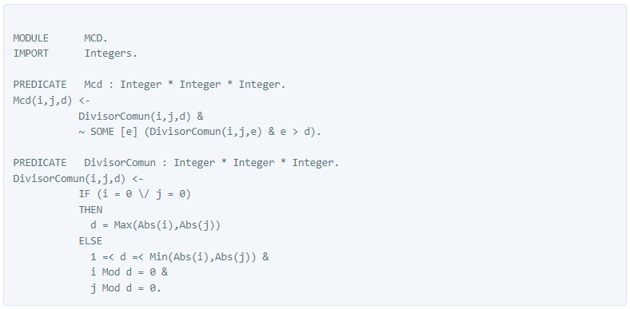

Símbolos
Numeración de Gödel
La numeración de Gödel es una función que asigna a cada símbolo y fórmula de un lenguaje formal un número único, denominado Número de Gödel (GN). El concepto fue utilizado por primera vez por Kurt Gödel para la demostración del teorema de Incompletitud de Gödel.
La enumeración de un conjunto de funciones computables se denomina también enumeración de Gödel o enumeración efectiva. Una enumeración de Gödel se puede interpretar como un lenguaje de programación donde los números de Gödel están asignados a cada función computable igual que los programas de cálculos a los valores para la función en este lenguaje de programación.
Definición
Dado un conjunto enumerable S, una enumeración de Gödel es una función.

donde f y la inversa de f son funciones computables.
Los números de Gödel se construyen con referencia a símbolos de cálculo proposicional y la aritmética formal. Cada símbolo se asigna primero a un número natural, por tanto:

Y así para todos los símbolos posibles. La sintaxis del cálculo proposicional asegura que no hay ambigüedad entre el símbolo "P" y el símbolo "+" aunque ambos estén asignados al número 12.
Sintaxis
Gödel tiene un sistema de módulos; permite enteros y racionales de precisión arbitraria y números de punto flotante. Puede resolver restricciones sobre dominios finitos de enteros así como restricciones lineales racionales. Admite procesamiento de conjuntos finitos. Tiene también una regla flexible de cómputo que admite el operador de poda, que es una generalización del operador commit de los lenguajes de programación concurrentes.
Las facilidades meta lógicas de Gödel dan cabida a meta programas que realizan análisis, transformación, compilación, verificación y puesta a punto entre muchas otras tareas.
Gödel apoya la representación básica de programas, scripts y teorías (de objetos). El primero de ellos viene dadopor el módulo Programas, el segundo por el módulo Scripts y el tercero por el móduloTeorías.
Primero, Syntax importa todos los símbolos exportados por los módulos Integers, Lists y Strings. También declara (entre otras) las siguientes bases, que son requeridas por la representación básica de expresiones de varios tipos.
Términos: Name, Type, Term, Formula, TypeSubst, TermSubst y VarTyping
Name es el tipo de término que representa el nombre de un símbolo, Type es el tipo de término que representa un tipo, Term es el tipo de término que representa un término, Formula es el tipo de un término que representa una fórmula, TypeSubst es el tipo de un término que representa una sustitución de tipo, TermSubst es el tipo de término que representa una sustitución de término y VarTyping es el tipo de un término que representa una variable escribiendo.
Esqueleto de los programas
Así es como sería la estructura de un programa en el lenguaje Gödel:
IMPORT Integers.
PREDICATE Fib : Integer * Integer.
% Fib(k,n) <-> n is the Fibonacci number F_{k} of rank k.
Fib(0,0).Fib(1,1).
Fib(k,n) <-
k > 1 &
FibIt(k-2,1,1,n).
PREDICATE FibIt : Integer * Integer * Integer * Integer.
% FibIt(k,f,g,n) <-> n = F_{k} * f + F_{k+1} * g.
FibIt(0,_,g,g).
FibIt(k,f,g,n) <-
k > 0 &
g < n &
FibIt(k-1,g,f+g,n).
Como curiosidad, se puede destacar que este lenguaje no funciona en un entorno Windows.
Aplicación a descargar para editar y ejecutar
Swi Prolog ofrece un campo de trabajo para el lenguaje de programación Gödel.

Paradigma
Gödel es un lenguaje de programación declarativo, de propósito general, adherido al paradigma de la programación lógica. Es un lenguaje fuertemente tipado, con un sistema de tipos basado en many-sorted logic con polimorfismo parametrizado. Se le dio ese nombre en honor al lógico Kurt Gödel.
Ejemplo
El siguiente ejemplo de módulo Gödel es una especificación del máximo común divisor (MCD) de dos números. Su objetivo es mostrar la naturaleza declarativa de Gödel, pero no es particularmente eficiente. El predicado DivisorComun dice que si i y j no son cero, d es un divisor común de i y j si está entre 1 y el menor entre i y j y divide a los dos en forma exacta. El predicado Mcd dice que d es el MCD de i y j si es un divisor común de i y j y no existe e que sea también divisor común de i y j y sea mayor que d.
